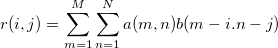

2D相関は、通常、2つの2D信号間の類似点を検出するのに使用します。 2D信号は、行列に保存されることが多くあります。2つの行列,aおよびb,の2D相関は次のように定義されます。

2D相関は、線形または循環です 線形の相関に対しては、 元の範囲の外側にあるインデックス要素を0として扱います。それに対して、循環相関は、元の範囲内の要素の繰り返しとして表示されます。線形相関の結果行列の大きさは(m1+m2-1)*(n1+n2-1)であり、 m1 と m2 はそれぞれ、2つの行列の幅と高さです。反対に、循環相関を計算すると、 M とN がそれぞれ2つの行列の幅と高さより大きくなる時、行列のサイズはM*Nとなります。通常、線形相関は入力にインパルス信号が含まれる場合に使われ、循環相関は、信号が周期的に表示される場合に使われます。
相関の強さは、信号がどの程度似ているのかを示しています。相関が大きい場合、2つの信号は大変よく似ていると考えることができます。反対に、相関が0の場合、2つの信号は完全に別のものと考えることができます。
2D相関を使用するには
|
このセクションで説明している項目 |